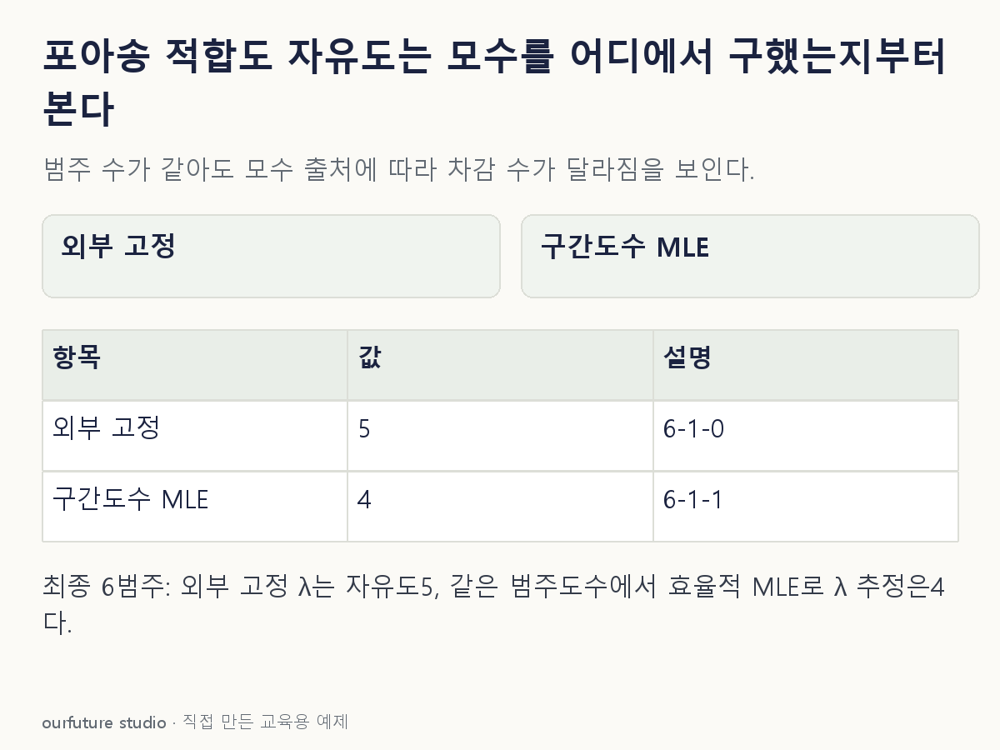

조건을 바꾸며 확인하기
고정 총합·고정 구간의 다항도수 적합도 설정이다. 실제 포아송 적합·구간 병합·p값 계산을 수행하지 않는다.
기본 예제와 비교하기
아래 그림과 표는 글의 기본 조건입니다. 입력을 바꾼 결과는 계산 칸에서 확인하세요.

같은 문제를 직접 골라 보기
독립 표본을 최종 6개 범주로 나눴다. 기대도수는 충분하다. A는 λ를 외부에서 고정하고, B는 최종 범주 도수의 다항 우도로 λ 한 개를 정규적인 최대우도 추정한다.
조건을 더 바꾸면?
최종 범주만 7개로 늘리고 B의 추정 방식·모수 수와 나머지 근사 조건은 유지한다. B의 자유도는?
변형 풀이 확인
7−1−1=5다.
달라진 것은 최종 범주 수뿐이다. 표본 수나 λ의 값이 아니라 k와 같은 자료에서 추정한 모수 수로 계산한다.
최종 범주 − 합계 제약 − 같은 자료의 추정 모수.